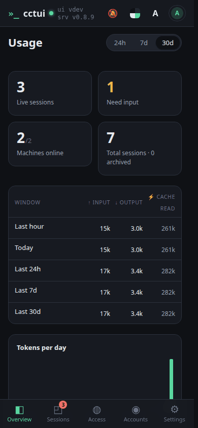

The fleet in four numbers Sessions running now, sessions waiting on you, machines online, and the all-time total.

Tokens by time window The same usage read over the last hour, day, week and month, split into input, output and cached tokens.Where the tokens went Daily volume and a per-model breakdown, so an expensive habit shows up before the bill does.